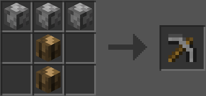

Кайло велетня
Кайло велетня — це унікальний інструмент, який випадає з Гігантів. Можна скрафтити, але, на відміну від інших інструментів з цього моду, кайло не зачаровується автоматично. Однак воно має здатність руйнувати блоки одного типу в кубі 4x4x4. В теорії можна використовувати як зброю, оскільки кайло наносить цілих 10 одиниць шкоди, щоправда швидкість атаки повільна.
- Тип: інструмент
- Міцність: 1024
- Шкода: 10
- Швидкість атаки: 0.5
- Швидкість копання: 4 (як камінь)
- Зачаровуваність: 5
- Відновлюваний: так
- ID: twilightforest:giant_pickaxe
Якщо зламати, наприклад, куб з каменю 4x4x4, то замість 64 блоків звичайного кругляка випаде один Гігантський кругляк. Важливо, що міцність зменшується за кожен зламаний блок, тобто при руйнуванні куба 4x4x4 буде витрачено 64 одиниці міцності. Діапазон взаємодії також більший: на 2,5 блоки більше, як для побиття сутностей, так і для руйнування блоків.
Також зазначено, що кайло велетня має коливання хітбоксу за координатами X/Z понад ± 32,768. Думаю, це візуально помітно.
Майстрування
